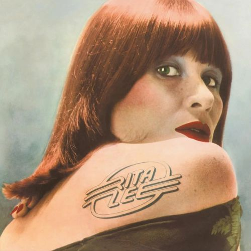
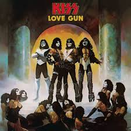
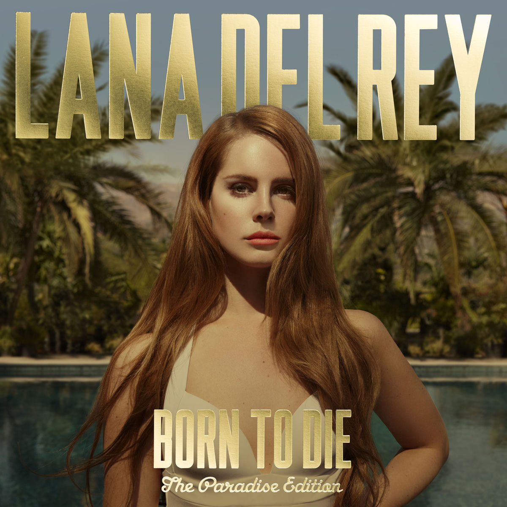
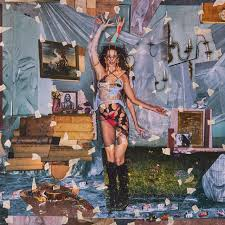
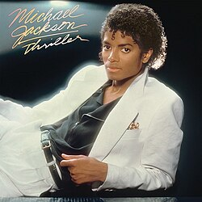

Hit Me Hard and Soft
letras melancólicas e transparentes sobre desilusões amorosas, fama e autodescoberta
Mayhem
uma viagem profunda ao caos e à turbulência psicológica gerados pela fama

Rita Lee(1979)
o sétimo trabalho solo da cantora e marca o início da histórica parceria musical e amorosa com Roberto de Carvalho
TAURUS
celebra o amor próprio, a autoestima e o empoderamento feminino
Fallen
Suas letras exploram temas sombrios, superação, luto e isolamento

Love Gun
o auge da formação clássica da banda e traz a faixa-título homônima, um dos maiores hinos do grupo

Born to Die – The Paradise Edition
O projeto aborda o sadcore de Hollywood, misturando melancolia, nostalgia dos anos 1950, questionamentos do "sonho americano" e paixões intensas e trágicas.

Coisas Naturais
traz 13 faixas inéditas e autorais criadas em um "acampamento musical" imerso na natureza

Thriller
temas como paranoia, fama, romance, e o fascínio do cantor pelo cinema de terror.
Man's Best Friend
usa o humor, a sensualidade e batidas retrô para transformar a dor do coração partido em um som provocativo e envolvente.